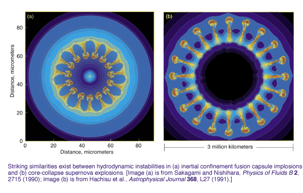
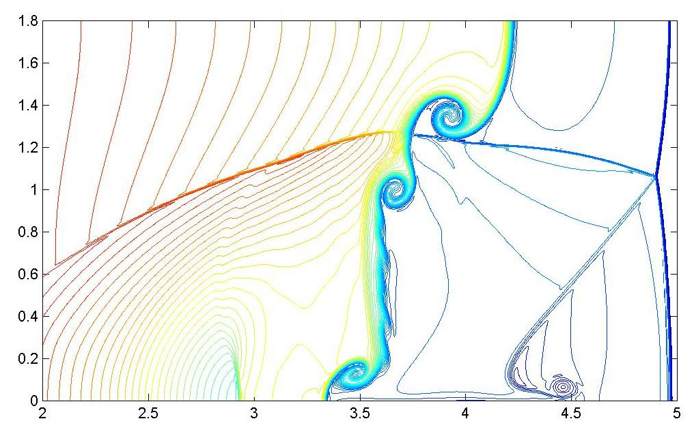
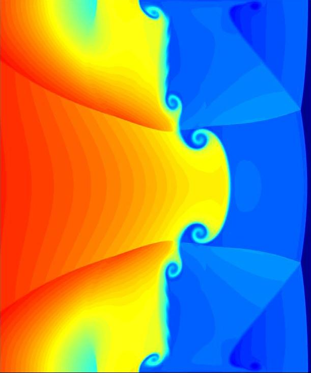
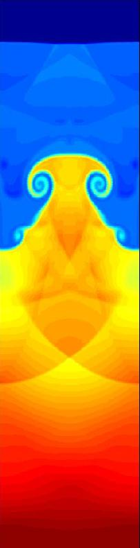
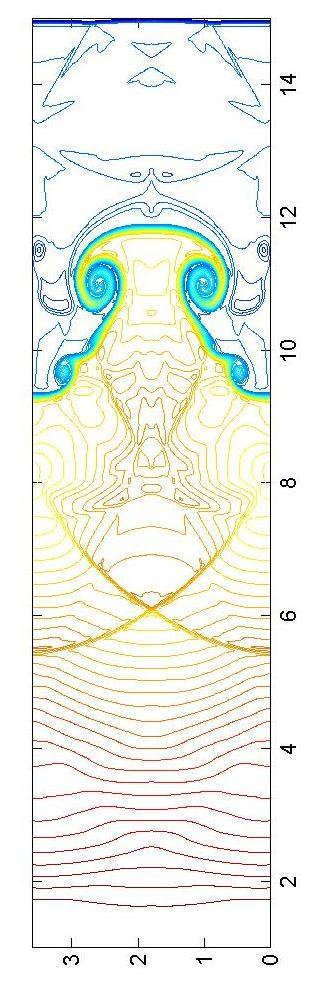
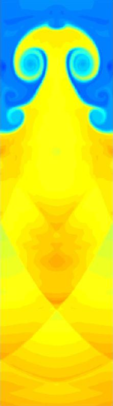
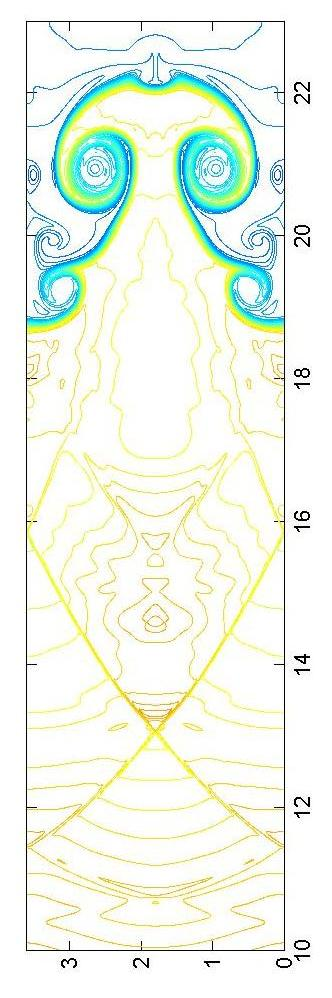
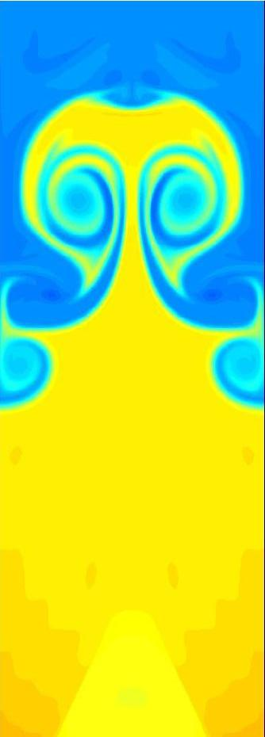
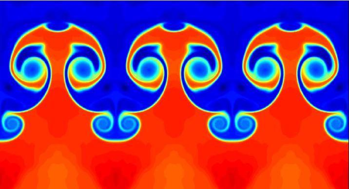
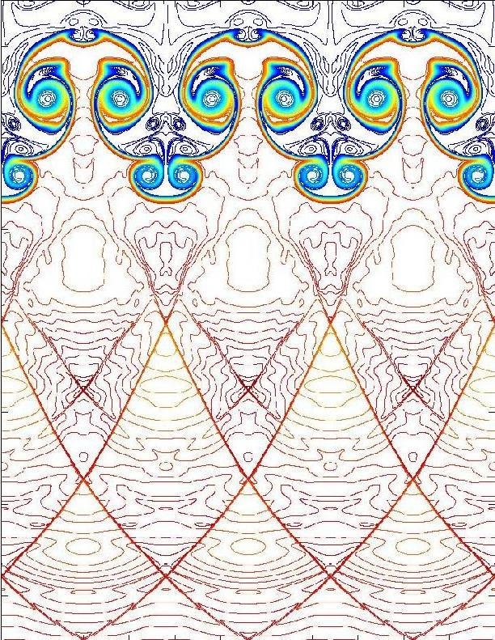

Richtmyer-Meshkov Instability
Conjugate Filter OscillationReduction (CFOR) scheme for the 2D Richtmyer-Meshkov instability
(Yongcheng Zhou and Guowei Wei)
Richtmyer-Meshkovinstability (RMI) refers to the instability occurs at an impulsively acceleratedinterface between two different gases. It differs from theRayleigh-Taylor instability for which the acceleration at the interface is aconstant, and from the Kelvin-Helmholtz instability which is due tothe shear stress between the two fluids at the interface. Richtmyer-Meshkovinstability is abundant and omnipresent in nature as well as technologicalapplications. The study of Richtmyer-Meshkov instability is of particularimportance to a large number of science and engineering applications, such asnuclear explosions, inertial confinement fusion (ICF) capsule implosions,supernova explosions, supersonic and hypersonic combustion in air breathingvehicles, flows in shock tubes, laser-matter interaction, to name only a few.

Numerical simulations are indispensable tools for estimating how the growthrate of the instability depends on a number of physical parameters, suchas the Mach number of the incident shock, the density difference of two gasfluids, the compressibility of the two fluids, the size, shape and initialperturbation of the interface. Accurate simulation of Richtmyer-Meshkovinstability is notoriously challenging. What is involved is theinteraction of shock and turbulence. It requires both high (spectral)resolution and ability of efficient shock capturing.
Conjugate filter oscillationreduction (CFOR) scheme is constructed by using a wavelet-collocationscheme, the discretesingular convolution (DSC) filtersfor both spatial discretization of hyperbolic conservation law systems andoscillation suppression. The DSC algorithm is a local spectral method (LSM) which is essentially non-dispersive (END) with near 2point per wavelength (PPW) for solving PDEs. It has global (spectral)methods' accuracy and local methods' flexibility for handling boundaryand geometry. Both the theory of distribution and theory of wavelet analysisunderpin the DSC algorithm. Under the philosophy of the DSC algorithm, a largenumber of approximation kernels have been constructed and they have similarperformance. The DSC algorithm has been tested for a great variety of scienceand engineering computations.
Some facts about theCFOR scheme that can be found in a JCP paper:
(1) A factor of 1,000,000 times more accurate than the standard 4th orderfinite difference scheme for wave propagations.
(2) Unparallel reliability in long time integration. The error (L1 or L2)at t=100 is about 1/10,000,000 for the propagation of a 2D isentropic vortexgoverned by the Euler's equations.
(3) Less than 3 points per wavelength (PPW) to resolve compressibleor incompressible waves governed by the Navier-Stokes or Euler'sequations.
(4) Just 5 PPW to fully resolve the interaction of shock and oscillatoryentropy waves governed by Euler's equations.
Preliminary results are obtained by using the CFOR scheme for anArgon-Xenon interface. The gases are assumed to be perfect and their motions aregoverned by the Euler equations. An initial incident shock propagating atMach 4.46 or Mach 10 impinges on a sinusoidally perturbed density gradient. Thedeformation of interface, accumulation of vortex roll-ups, formation of spikeand bubble, and onset of turbulence mixing are observed. At a later time, theburn out at the top of the mushroom indicates the upcoming inverse of crestsand troughs, which was observed in Jacobs' experiment at University of Arizona.


Mach number 4.46, domain 5x1.8 cm^2, resolution 1024x512, time 5.0e-5second


Mach number 4.46, domain 15x3.6 cm^2, resolution 768x256, time 1.4e-4 second


Mack 10, t=1.2e-4

Mack 10, t=2.16e-4


Mack 20, t=6.5e-5
Reference:
G.W. Wei, and Yun Gu, Conjugated filter approachfor solving Burger's equation, J. Comput. Appl. Math., 149, 439-456 (2002).
Yun Gu and G.W. Wei, Conjugated filter approachfor shock capturing, Commun. Numer. Meth. Engng. , 19, 99-110(2003).
Y.C. Zhou, Yun Gu and G.W. Wei, Shock-capturing withnatural high frequency oscillations, Int. J. Numer. Methods inFluid, 41, 1319-1338 (2003).
Y.C. Zhou and G.W. Wei, High-resolution conjugatefilters for the simulation of flows, J. Comput. Phys., 189,150-179 (2003).
Links: